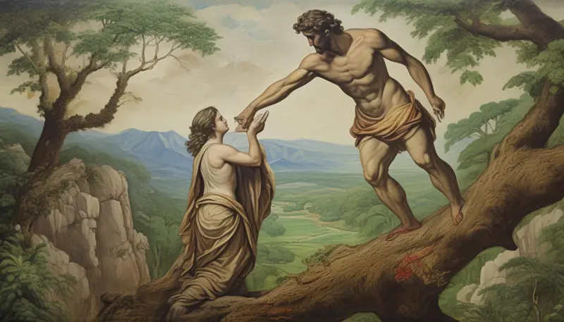

In the Beginning..
God’s Amazing Creation: Gather around, little ones, and let me tell you the most wonderful story ever told! It’s about how God, our loving Father in Heaven, made everything in the entire universe. A long, long time ago, there was nothing but darkness. Can you imagine that? No sun, no moon, no stars, no trees, no animals, not even you or me! But God had a wonderful plan.
Let There Be Light!
God spoke with a powerful voice, “Let there be light!” And suddenly, a brilliant light filled the darkness. It was so beautiful! God called the light “Day” and the darkness “Night.”
The Sky Above
On the second day, God made a big, blue dome to separate the water above from the water below. This dome became the sky we see every day, with its fluffy clouds and colorful rainbows.
Land and Sea, Plants Galore!
Next, God gathered all the water into one place, forming the oceans and seas. The dry land appeared, and God called it “Earth.” But God wasn’t done yet. He covered the Earth with all sorts of green plants, from tall trees to tiny flowers.
Sun, Moon & Stars
God filled the sky with a bright sun for day, a glowing moon for night, and countless twinkling stars to light up the darkness!
Sea Creatures & Birds
The oceans came alive with fish, whales, and dolphins! The sky filled with birds of every color, singing their happy songs.

Animals & Humans
God created all land animals and the first humans, Adam and Eve, giving them care of the beautiful Garden of Eden.

Day of Rest
After six amazing days of work, God rested, looking at His creation with love. He blessed the seventh day as special.
Moral of the Story
God created everything with love and care. We should appreciate the beautiful world He has given us and take care of it!